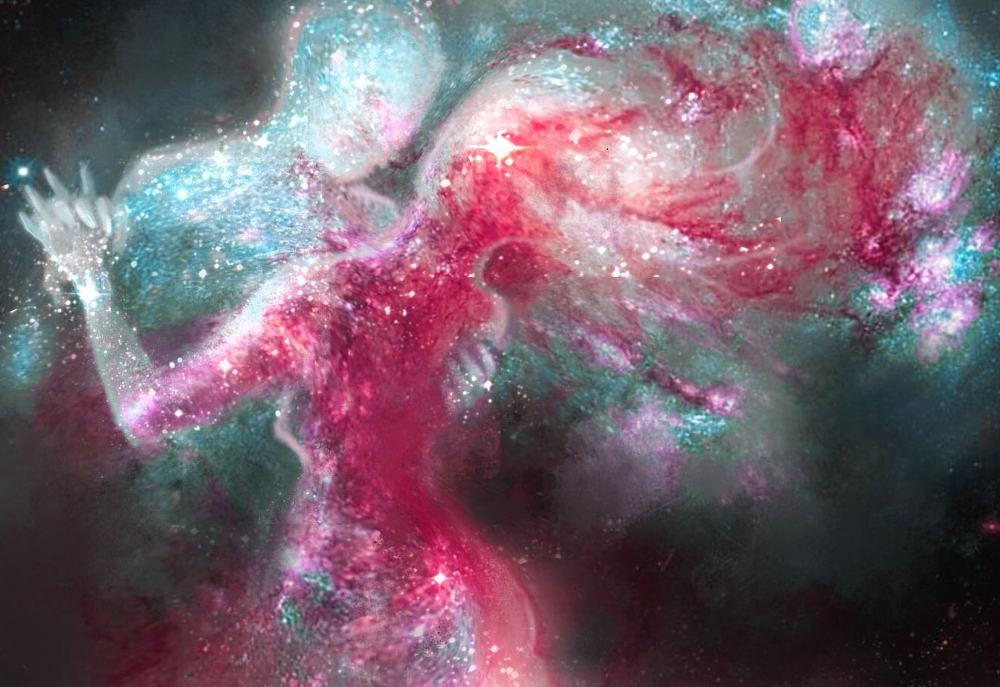

OP-ED
Robert Egg
May 10, 2023
OP-ED
Justin Goldberg
August 5, 2022
OP-ED
Sam Vimes
April 28, 2022
OP-ED
Tyler Ross
February 12, 2022
OP-ED
Howard Xin
November 25, 2021
OP-ED
Ben Costelli
October 4, 2021
OP-ED
Eric Patron
August 8, 2021
OP-ED
Jacob Webber
July 15, 2021

OP-ED
Evelyn Farmer
June 2, 2021
OP-ED
Enrique Kozlov
May 25, 2021
OP-ED
Jeff Williams
May 19, 2021